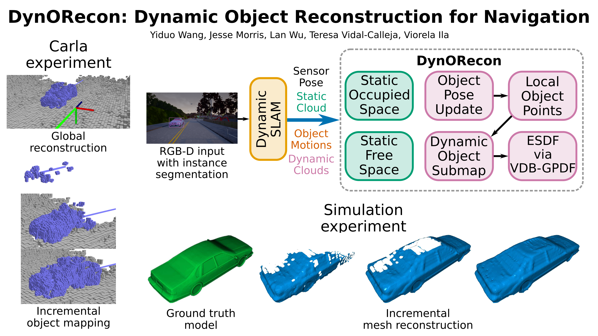

This paper presents DynORecon, a Dynamic Object Reconstruction system that leverages the information provided by Dynamic SLAM to simultaneously generate a volumetric map of observed moving entities while estimating free space to support navigation. By capitalising on the motion estimations provided by Dynamic SLAM, DynORecon continuously refines the representation of dynamic objects to eliminate residual artefacts from past observations and incrementally reconstructs each object, seamlessly integrating new observations to capture previously unseen structures. Our system is highly efficient (~20 FPS) and produces accurate (~10 cm) reconstructions of dynamic objects using simulated and real-world outdoor datasets.
@INPROCEEDINGS{Wang2025icra_dynorecon,
title={DynORecon: Dynamic Object Reconstruction for Navigation},
author={Wang, Yiduo and Morris, Jesse and Wu, Lan and Vidal-Calleja, Teresa and Ila, Viorela},
year={2025},
booktitle={IEEE International Conference on Robotics and Automation (ICRA)}
}

DynORecon constructing an approaching vehicle incrementally based on a Dynamic SLAM framework. (a): We visualise the volumetric reconstruction of a dynamic object in addition to the object trajectory, camera pose and camera trajectory to better represent the volumes of reconstructed obstacles. We also visualise the dense reconstruction of the static environment. (b): Initial observation of the object. (c--d): Object reconstruction being completed as more observations are integrated into it.